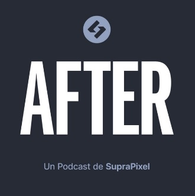

S03E24
Escuchar en YouTube
S03E23
Escuchar en YouTube
S03E22
Escuchar en YouTube
S03E21
Escuchar en YouTube
S03E20
Escuchar en YouTube
S03E19
Escuchar en YouTube
S03E18
Escuchar en YouTube
S03E17
Escuchar en YouTube